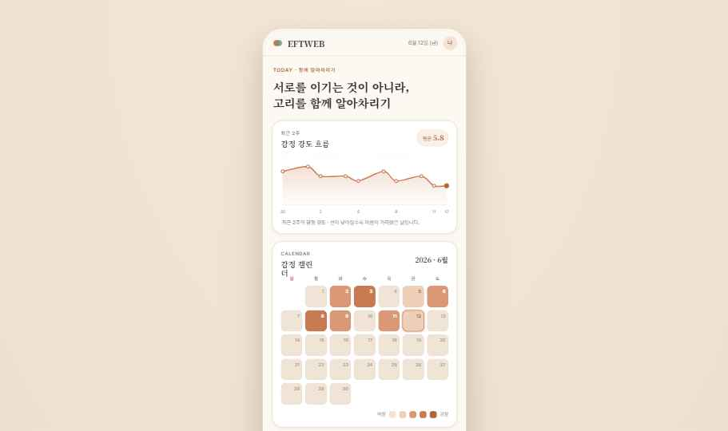
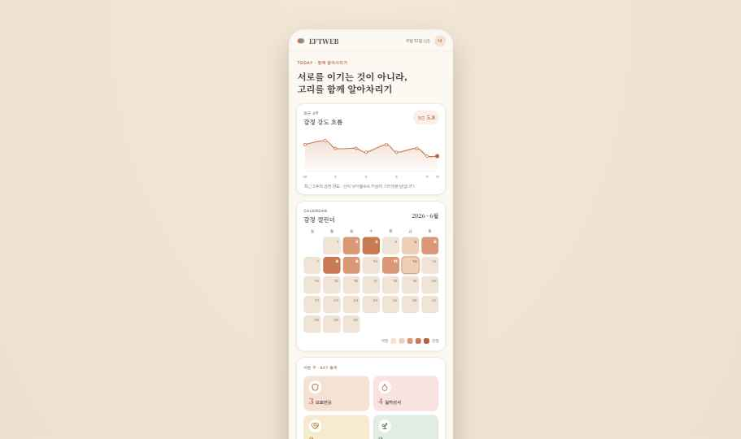
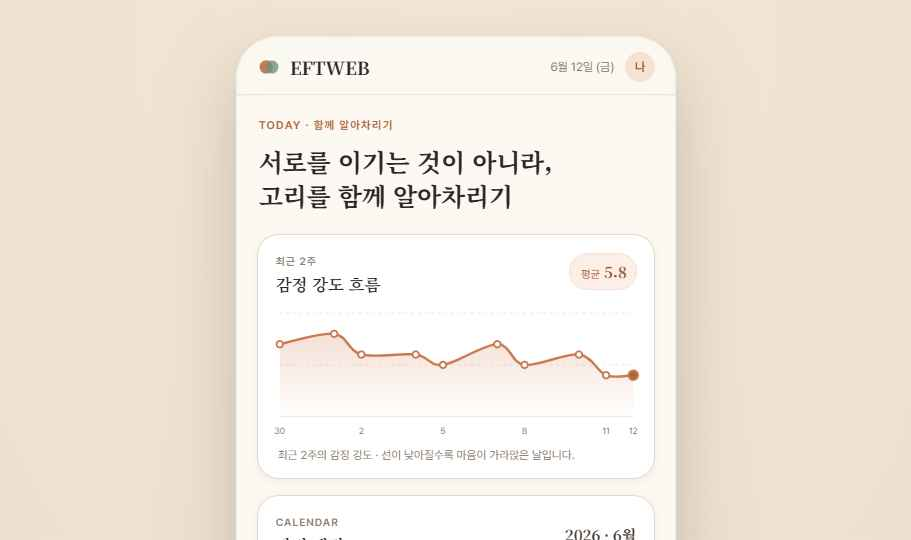
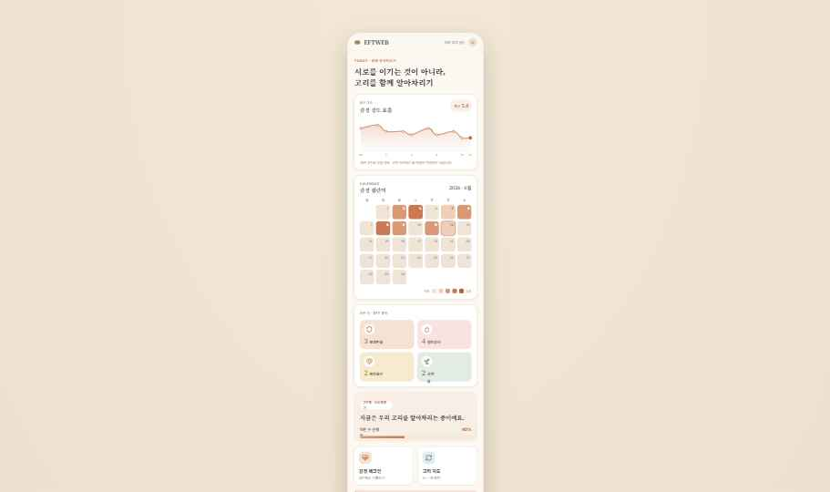

최근 2주
감정 강도 흐름
선이 낮아질수록 감정 강도가 내려간 날입니다.
TODAY · 함께 알아차리기
최근 2주
선이 낮아질수록 감정 강도가 내려간 날입니다.
CALENDAR
이번 주 · EFT 층위
이 앱은 치료자를 대체하지 않는 기록·연습 보조도구입니다. 회기 사이에 감정, 고리, 욕구, 새 반응을 차분히 정리하는 데 사용하세요.
EMOTION CHECK-IN
겉반응을 비난하기보다, 그 반응이 지키려 했던 마음을 찾아봅니다.
EMOTION RECORDS
색과 카드로 감정의 층위와 강도를 한눈에 봅니다.
NEGATIVE CYCLE
문제는 한 사람이 아니라, 두 사람 사이에서 반복되는 고리입니다.
고리가 시작되는 신호
답장이 늦거나 표정이 굳어질 때PRACTICE
자주 쓰는 기능을 짧은 카드로 모았습니다.
EFT ROADMAP
정서중심 부부치료는 갈등을 이기는 법보다, 고리를 알아차리고 속마음을 나누며 새 반응을 유지하는 흐름을 연습합니다.
서로를 탓하기보다 반복되는 부정적 고리를 함께 봅니다.
겉반응 아래의 두려움, 외로움, 애착욕구를 더 안전하게 말합니다.
새로운 대화와 회복 방식을 일상 문제 해결에 연결합니다.
MISSIONS
지금 단계에 맞는 개인 미션과 공동 미션을 연습합니다.
SCREENSHOT GUIDE
아래 카드는 실제 저장 데이터가 아니라, 각 기능이 어떤 흐름으로 연결되는지 보여주는 안내입니다.
홈
체크인을 저장할수록 감정 강도 그래프, 감정 캘린더, EFT 층위 숫자가 함께 갱신됩니다.

체크인

고리
기록 카드의 ‘고리에 반영’을 누르면 장면과 내 반응이 고리 지도 입력으로 넘어갑니다. 저장 후에는 순환 원형 그림으로 반복 패턴을 확인합니다.

미션
초기에는 고리 알아차리기, 중기에는 속감정 표현, 후기에는 새 대화 유지로 달라집니다.

공유
나만 보기로 저장한 기록은 개인 기록에 남고, 공유로 바꾼 기록만 함께 보기 공간에 모입니다.
회기 정리
회기 전에는 다루고 싶은 장면을, 회기 후에는 새롭게 알게 된 감정과 이번 주 연습을 남깁니다.
SESSION NOTE
상담 전 다루고 싶은 주제와 상담 후 연습할 반응을 정리합니다.
SETTINGS
현재 EFT 단계와 데이터 백업을 관리합니다.